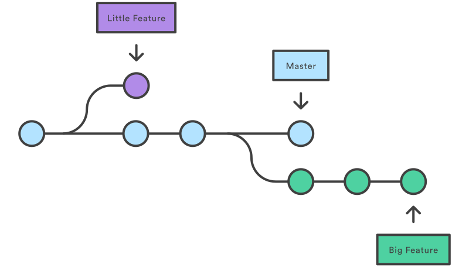

Git
By Jorge Arias & Rodrigo Verdugo
https://joariasl.github.io/git-presentation
</> on GitHub
Algunos recursos
Confiable
- Integridad: Suma de verificación SHA1 de 160 bits
- Guarda como instantáneas y no como cambios
- Nada se borra
- Firma de autores
- Transfiere usando HTTPS, SSH
Alto rendimiento
- Procesar 20.000 historias en menos 5 segundos (Linus Torvalds)
- +44% C / +34% Shell
- GNU GPLv2
Distribuido

Gestor de contenidos
- Mini sistema de archivos
- Desarrollo no lineal (Ramas paralelas)
Comenzar con Git
git config
$ git config --global user.name "John Doe"
$ git config --global user.email johndoe@example.com
Configuración global en dotfile ~/.gitconfig
git init
- $ git init [directory]
Todo Git está en .git/
Obtener Ayuda
$ git <command> --help
$ git help <command>
$ man git-<command>
Guardando cambios
The Staging Area

git [add|rm]
Agregar modificaciones al staging area o área de preparación
$ git add [file|folder] ...
$ git add -u [file|folder] ... # Agrega auto archivos con seguimiento
$ git rm [file|folder] ... # Remover archivos de git y disco
$ git rm --cached [file|folder] ... # Remover del staging area
git status
Comprobar cambios (staging area) y estado del repositorio
$ git status
Archivo .gitignore
Configuración de archivos a los que Git no hará seguimiento
*.ext
!*.c
/folder
folder #All subdirs
build/
(Archivo .gitignore debe estar en la raíz del proyecto)
Collection .gitignore templates: https://github.com/github/gitignore
git diff
Comparar cambios
$ git diff [--cached|--staged] # Modificados contra preparados
$ git diff <commit> <commit> # Entre dos commits
git commit
Confirmar cambios del staging area a la historia
$ git commit
$ git commit -m "Menssage"
$ git commit [-a|--all] # Stage all modified and deleted paths
$ git commit --amend # Reemplaza último commit
Nota: Ningún commit se elimina implícitamente
git log
Ver historia de cambios (commits)
$ git log # Ver últimos cambios de la rama
$ git log --all # Mostrar todos los commits con referencia
$ git log --oneline --decorate # Ver los punteros de referencia
$ git log --graph # Ver ramas graficadas
Branch
(Ramas)
- Punteros dinámicos

Estructura de datos

- Las ramas son punteros a commits
- HEAD es un puntero a rama de trabajo actual
Estructura de datos

- Los commits apuntan a otros commits
- Los commits apuntan un arbol único
- Los árboles apuntan a tree o blobs (snapshot de archivos)
- En cada nodo se tiene la suma de verificación
git branch
Administrar ramas
$ git branch # Mostrar ramas
$ git branch -vv # Mostrar ramas con SHA1 y commit subject line
$ git branch <nombre> # Crear rama con puntero a posición actual
git checkout
Movernos entre ramas y commits
$ git checkout <rama> # Cambiar a rama
$ git checkout -b <rama> # Cambiar a rama y crear si no existe
Tags
(Etiquetas)
- Punteros estáticos
- Usados para marcar un punto importante en la historia (Como la publicación de una versión o hito importante)
git tag
$ git tag # Mostrar etiquetas actuales
$ git tag -l 'v1.8.5*' # Mostrar buscando expresión regular
$ git tag -a v1.4 -m 'Mensaje de version' # Crear tag con mensaje opcional
Ver:
git merge
Fusionando ramas
$ git merge <rama< # Fusionar <rama< con posición actual
$ git merge --no-ff # Fusionar evitando fast-forward
Otros comandos útiles
$ git rebase
$ git reset
$ git revert
$ git stash
$ git reflog
$ git gc
Repositorios remotos
git clone
Clonar un repositorio remoto
$ git clone <repository> [<directory>]
# Clonar ruta de repositorio a directorio si se define
#, sino usa nombre del repositorio
git remote
Administrar conexión a repositorios remotos
$ git remote show [-v] # Ver repositorios remotos (-v ver detalle)
$ git remote add <name> <repository/url> # Agrega repositorio remoto
git fetch
Descargar objetos y referencias de repositorio remoto a local
$ git fetch <repository>
git pull
Fetch + Merge
$ git pull <repository> <ref>
# Hacer Fetch y luego Merge a la rama o referencia remota
git push
Publicar cambios
$ git push <repository> <ref>
# Publicar cambios de rama o referencia y objetos asociados
Colaborando
Servicios de alojamiento
Usando modelo de ramas
Definir un marco de trabajo en base a la gestión de ramas

- Feature Branch Workflow
- Git Flow
- Definir estándares propios
Git Flow

Forking Workflow
(Basado en bifurcaciones)
- Cada repositorio es independiente
- Solicitudes de integración vía "Pull Request"
- Las integraciones las maneja el administrador de cada repositorio
- Usado en el desarrollo de Software Libre u Open Source
Revisar
- ZSH + Oh My ZSH: Integración para uso de Git desde terminal
- Herramientas con GUI para gestión de Git
- Git e integración en IDEs
- Servicios de Despliegue e Integración continua (Travis CI, Jenkins, etc.)
Ventajas de Git
- Seguro
- Descentralizado (puedo trabajar en repositorio local)
- Desarrollo no lineal (comportamiento natural)
- Altamente utilizado
- Integración con herramientas de gestión de proyectos como Atlassian Jira
- Despliegue e Integración continua (Travis CI, Jenkins, etc.)
- Excelente para uso en ambientes de desarrollo
Desventajas de Git
- Curva de aprendizaje alta si se quiere aprovechar
- Todo el equipo debe saber Git
- Git no es un sistema de backup de mi repositorio, sino que del proyecto